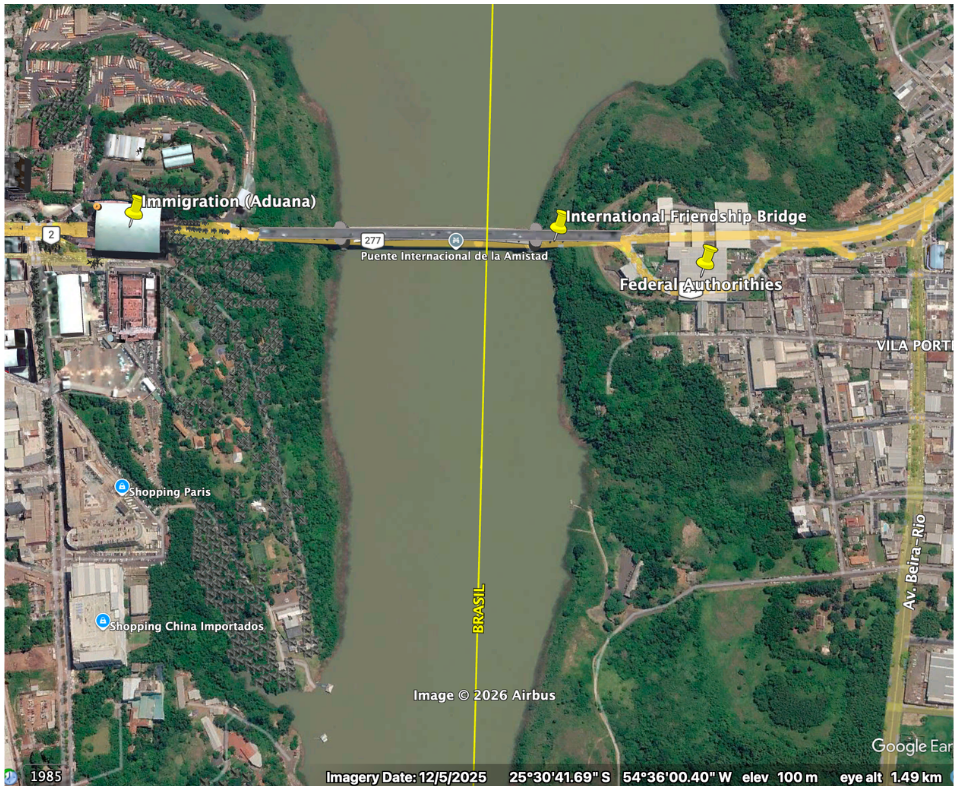
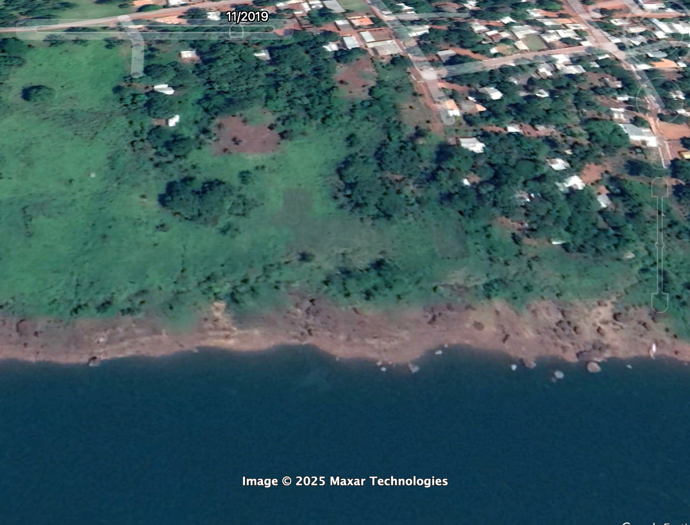
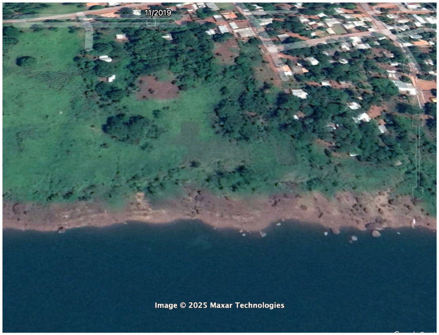
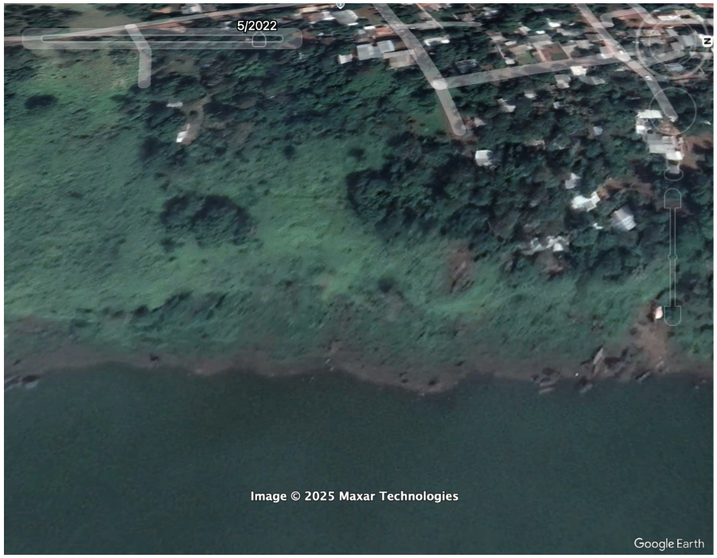
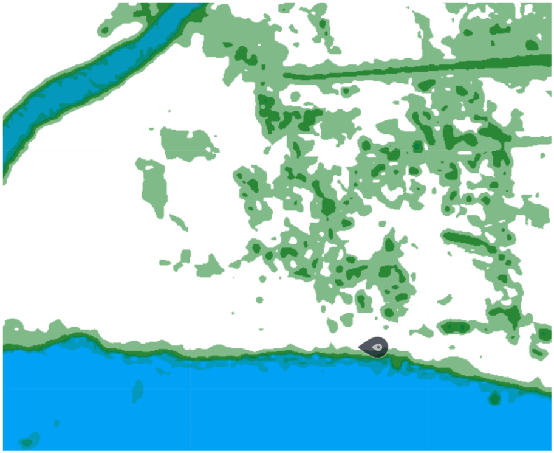
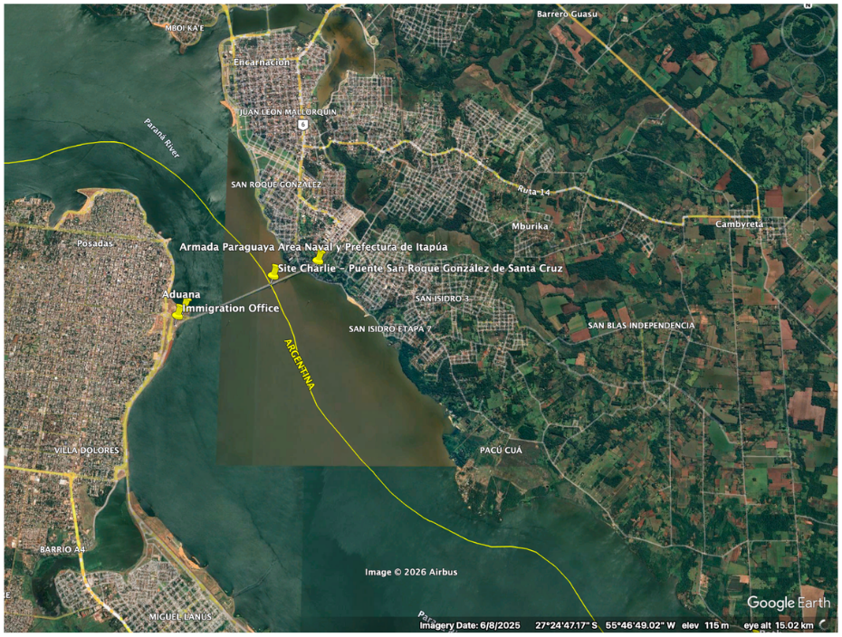
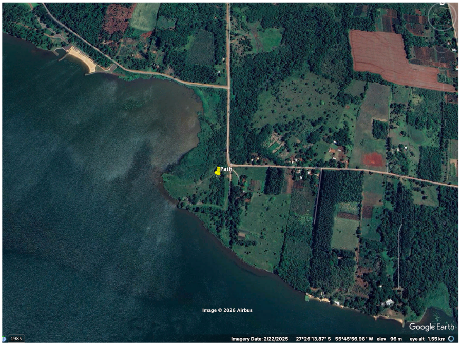
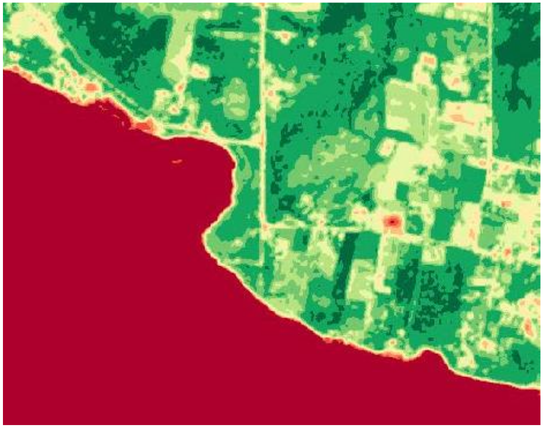
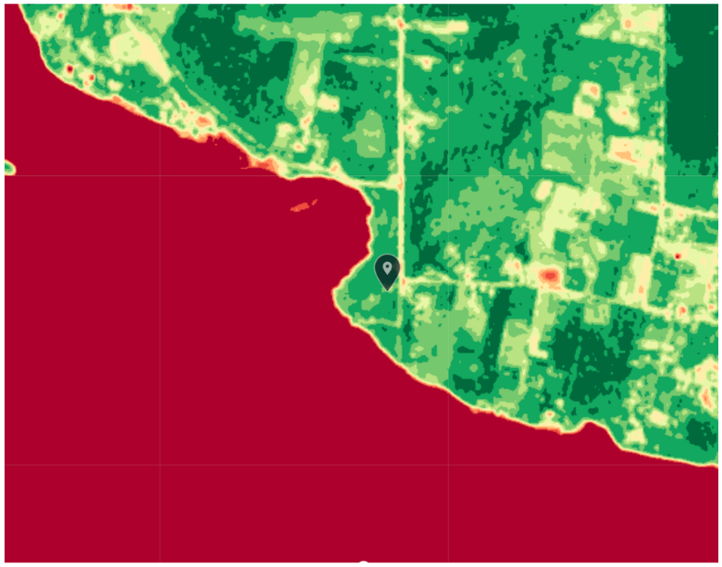
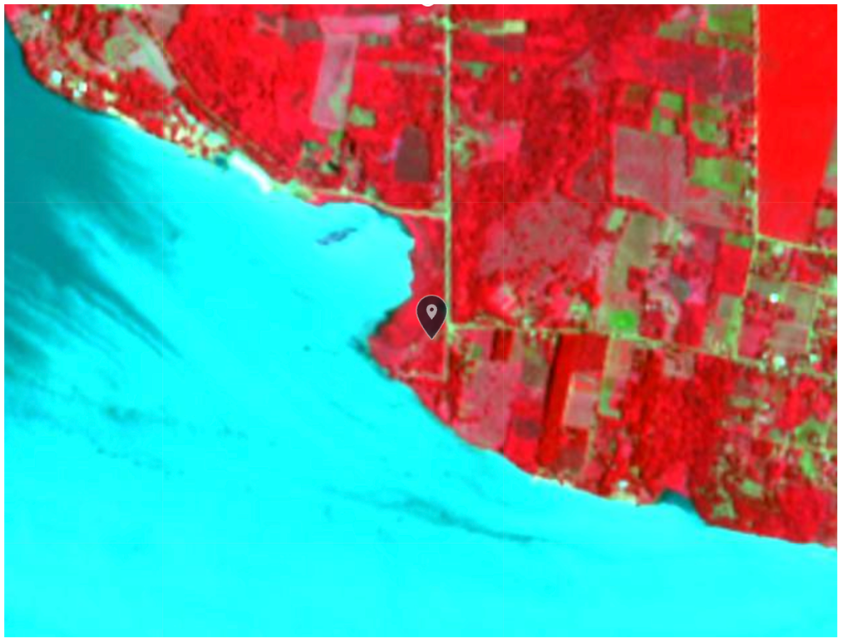

Executive Summary
This report explores human trafficking infrastructure across three sites on the Southern Cone frontier between Argentina, Brazil, and Paraguay. The purposes of this report are to map out and corroborate exploitation patterns across the region and to independently produce OSINT reports. The assessment identifies and corroborates exploitation indicators across three distinct crossing modalities, shown through open source indicators including news, government sources, satellite imagery, and forced labour prosecution data.
The Lista Suja cross-reference against frontier municipalities found 13 entries documenting approximately 109 workers in conditions analogous to forced labour between 2022 and 2025, with livestock and ranching as the dominant sector. Site Alpha (Foz do Iguaçu / Lake Itaipú) — analyzed through multi-temporal Google Earth imagery and Sentinel-2 spectral bands — confirms persistent informal dock infrastructure at the reservoir shoreline, inconsistent with natural formation and consistent with established clandestine access. Site Charlie (Posadas / Encarnación) was verified using NDVI and Color Infrared (CIR) on Sentinel-2 imagery; across two acquisition dates, a persistent vegetation gap and a linear corridor inland from the riverbank are consistent with a vehicle access track outside formal inspection range.
Site Bravo (Ponta Porã) presented a structural finding of a different kind. The absence of any Lista Suja entries is itself analytically significant — the crossings most permissive to trafficking flow are simultaneously the least likely to generate prosecution records. No physical barrier exists at the border line, making it structurally unmonitorable at scale, a condition exploited by documented trafficking and narcotics networks.
The convergence of spectral indicators, enforcement data, and documented criminal network activity supports the assessment that the Southern Cone frontier remains one of the most structurally permissive trafficking environments in the region, sustained by geography, institutional capacity gaps, and the concealment afforded by the volume of legitimate cross-border commerce.
Methodology
The methodology used involved different tools and approaches, given the nature of the sites and the overlapping of evidence. Firstly, journalism and the UNODC reports were used to understand the regional context and the characteristics of the trafficking purposes and routes.
In the second stance, Google Earth Pro was used as visual evidence for both formal and informal crossing points. Sentinel-2 L2A was used in the scope of hidden pathways that do not make direct contact with the official points of entry into the States. The NDVI (Normalized Difference Vegetation Index) layer was applied as it measures plant health by comparing how strongly a surface reflects near-infrared versus red light — healthy vegetation appears green, while bare soil, cleared land, and footpaths appear red or orange, creating a visible anomaly against surrounding vegetation. Color Infrared (CIR) makes healthy vegetation appear vivid magenta and any ground-level disturbance appear as a contrasting pale or beige feature. NDWI (Normalized Difference Water Index) maps the water-land boundary with precision, making irregularities, cleared banks, and informal embarkation points detectable. Each layer sees a different aspect of the same physical reality.
Finally, the released government file containing those prosecuted for the exploitation of people, Lista Suja, was used as a layer to establish a connection between the borders and the categorization of exploitative purposes.
Regional Overview
Women and children have long been the main groups vulnerable to trafficking, especially in regions where climate disasters are frequent, as well as displacement issues. The majority of cases are related to the exploitation of labour, with sexual exploitation being particularly prevalent (United Nations Office on Drugs and Crime, 2024). The main region for these cases remains the Americas, with a greater predominance in South America (United Nations Office on Drugs and Crime, 2024). The Tri-Border Area (TBA) is the main operating route in Latin countries, due to its geographical position. The Paraná River borders Brazil, Argentina and Paraguay, where informal docks are often used for organized crime and all segments of trafficking.
Regarding Brazil, organized crime groups are usually the perpetrators of crimes exploiting women and girls and trafficking them along major highways such as BR-116. They target all states in the south of the country for this purpose (U.S. Department of State, 2025b). It is often the case that Paraguayan men end up in factories in Rio de Janeiro (U.S. Department of State, 2025c).
However, one of the most common practices in Paraguay is to force children into labour due to debts owed by their parents. For women, the main way of trafficking is for drug transportation and sexual exploitation. In the digital era, social media is now also used as another way to access people as victims, such as blackmailing intimate content (U.S. Department of State, 2025c). Agriculture, forced work and factories are the main sectors that victims of trafficking end up in Argentina, especially in harvesting and business (U.S. Department of State, 2025a).
Recent investigations by Paraguayan and Brazilian authorities revealed trafficking networks recruiting vulnerable Paraguayans with false promises of employment in Brazil, with victims allegedly destined for forced labour and servitude conditions near the Brazil–Paraguay border (G1, 2026).
Institutional dysfunction compounds the structural vulnerability of the corridor. Both Paraguay and Brazil are heavily affected by corruption, which enables criminal organisations to operate with relative impunity by exploiting poverty and weak state capacity. In Foz do Iguaçu, there are more than ten thousand Muslim residents, including a small Druze minority — a community whose presence has been linked to Hezbollah fundraising and logistical activity in the region. In Brazil, the case of Shukri Abu Baker — serving a sentence in the United States — and his brother Jamal, who allegedly held connections with Hamas and is currently in Syria, illustrate the overlap between transnational criminal and extremist networks in the TBA (Carneiro Filho, 2012).
| Category | Description | Examples |
|---|---|---|
| Domestic OCGs | Groups composed exclusively of Paraguayan nationals | Rotela Clan |
| Foreign-led OCGs | Led by non-Paraguayans; nationality determines identity | Chinese, Nigerian, Colombian, Serbian networks |
| Transnational OCGs | Identifiable by name regardless of leadership nationality | PCC, Comando Vermelho |
| Freelancers | Individuals participating without formal OCG membership | Logistics, transport, fraud operators |
| State-linked actors | Corrupt officials enabling networks through protection | Politicians, police, judges, military |
Despite being official crossings, weak oversight, corruption, and state neglect — alongside countless clandestine river ports — allow trafficking to operate largely in plain sight. Hezbollah's long-standing presence in the TBA is documented by Interpol, the US Treasury, and the Department of State; members and affiliates embed within the substantial Arab community and benefit from the black-market economy.
Site Analysis
Three sites were identified across the Southern Cone frontier, each representing a distinct crossing modality with different analytical implications for satellite observation and documentary corroboration. Sites were selected to reflect the range of formal and informal infrastructure through which trafficking flows operate — from clandestine waterway access to high-volume bridge crossings concealed within legal commerce.
| Site | Border Type | Crossing Mechanism | Enforcement Presence | Sentinel Applied | Lista Suja Correlation | Confidence |
|---|---|---|---|---|---|---|
|
Alpha
Foz do Iguaçu / Lake Itaipú
|
Reservoir (water) | Informal dock; concealment within high-volume formal bridge traffic | Bridge-limited; rural shoreline unsupervised | YES NDVI · NDWI |
Indirect — Paraná state entries (Foz do Iguaçu, Alto Paraíso) | MOD |
|
Bravo
Ponta Porã / P.J. Caballero
|
Open dry border | No physical barrier; continuous street grid across border line | Single Polícia Federal post; no barrier enforcement | NO No anomaly |
Absent — zero entries; absence is the finding | HIGH |
|
Charlie
Posadas / Encarnación
|
River crossing (Paraná) | Informal riverbank access 7 km beyond inspection perimeter; small boat crossings | Bridge-limited; 7 km river corridor unsupervised | YES NDVI · CIR |
Indirect — Mato Grosso do Sul corridor entries | MOD |


The International Friendship Bridge (Ponte da Amizade, ~25°31′S, 54°35′W) constitutes the formal reference crossing for this area, connecting Foz do Iguaçu, Brazil, to Ciudad del Este, Paraguay. However, the analytical focus of Site Alpha is the informal dock infrastructure documented approximately 5 km south of the bridge at 25°35′51″S, 54°35′50″W, along the Lake Itaipú reservoir shoreline. Despite the formal crossing infrastructure, the river corridor extends for more than 4,000 km, rendering constant surveillance of all access points operationally unfeasible — particularly in rural stretches beyond the bridge approaches ("Underworld Crossroads," 2024). The informal dock is consistent with unauthorized shoreline infrastructure documented in reporting on Lake Itaipú (Última Hora, n.d.). It cannot be excluded that the site may serve fishing or agricultural purposes without additional ground-truth corroboration.





NDVI: A low-NDVI zone is identifiable at the shoreline, indicating bare or stressed land at the water's edge. The signature is inconsistent with the surrounding riparian vegetation and is consistent with ground-level disturbance or cleared access — the type of footprint associated with informal dock infrastructure.
NDWI: The water-vegetation boundary at the AOI shows an irregular shoreline interface. The pattern is consistent with informal embarkation infrastructure at the lake margin rather than natural shoreline formation.
Combined interpretation: The spectral signatures reinforce the Google Earth temporal finding. Bare land at the shoreline persisting into the May 2026 acquisition, combined with the irregular water boundary, supports the characterisation of the site as an established informal access point rather than natural riverbank.


The site presents no physical barrier to cross-border movement. The international boundary is marked solely by the Avenida Internacional, a single avenue across which both city street grids continue without interruption. The only identifiable formal enforcement presence is a Brazilian Polícia Federal office directly adjacent to the border line. This configuration makes the crossing inherently unmonitorable at scale. The area has in fact been a focus point of investigations and properties were seized with the involvement of trafficking and illegal activities in operations such as Operation CAVOK by the Brazilian police, Polícia Federal (Polícia Federal, 2020).
The absence of Lista Suja entries for Ponta Porã is itself analytically significant. One of Brazil's most documented informal crossing zones generates no forced labour prosecution record — consistent with the pattern of institutional neglect at open dry-border crossings that makes them operationally attractive to trafficking networks. The absence reflects inspection capacity constraints, not the absence of exploitation.


Unlike Site Bravo, where no physical barrier exists, Site Charlie has formal border infrastructure at the bridge crossing. However, the Paraná River corridor extends approximately 7 km beyond the inspection perimeter before the informal riverbank access point is reached. This configuration means formal enforcement is geographically limited to the bridge node — the broader river corridor remains structurally vulnerable to clandestine crossing, consistent with documented use of small boat crossings on the Paraná.
Sentinel-2 L2A Analysis — Site Charlie
April 2026 Acquisition


January 2025 Acquisition


Four independent spectral analyses across two acquisition dates identify a consistent anomaly at the informal access point 7 km downstream of the formal Posadas/Encarnación crossing.
NDVI (both dates): A vegetation gap at the shoreline is inconsistent with surrounding agricultural land use. The low-NDVI zone (-1 to 0.1) measures 10.17 km² in the January 2025 acquisition, indicating extensive bare or stressed land at the water's edge — consistent with seasonal low-water conditions exposing more riverbank.
Color Infrared: A pale linear corridor is visible inland from the riverbank in the January 2025 CIR image, running through otherwise uniform agricultural plots. The geometry is inconsistent with field boundaries, which would appear sharper and more regular. The signature is consistent with a worn path or vehicle access track.
Seasonal note: January 2025 (austral summer) shows greater shoreline exposure than April 2026 (early autumn), consistent with Paraná River seasonal water level fluctuations. This variability is operationally significant: reduced water levels in summer months expand accessible riverbank, potentially increasing activity at informal crossing points during periods of lower hydrological visibility.
Lista Suja — Regional Cross-Reference
Brazil's Cadastro de Empregadores — known as the Lista Suja (Dirty List) — registers employers formally found to have subjected workers to conditions analogous to slavery. Updated periodically by the Ministry of Labour (MTE/MDHC/MIR), the March 2026 edition contains 669 entries spanning 2018–2025 fiscal inspection actions. Cross-referencing this dataset against the project's three site municipalities and documented route corridor reveals a pattern of forced labour prosecutions that directly overlaps with identified trafficking nodes (Ministério do Trabalho e Emprego et al., 2026). The entries are dated 2022–2025; this temporal distribution reflects when inspections reached the properties, not when exploitation began. It is not possible to infer an increase or decrease in violations from the date pattern alone — the list is only updated when enforcement actions occur, meaning undiscovered exploitation generates no record.
Corumbá Cluster — Site Alpha Area (MS)
Five distinct Lista Suja entries in Corumbá municipality, all dated 2024–2025, constitute the most analytically significant finding of this cross-reference. Corumbá sits on the Bolivia-Brazil frontier — a separate segment from the three assessed sites, treated here as a regional indicator of frontier labour exploitation rather than site-level evidence. All five entries involve livestock or ranching operations — the dominant labour exploitation sector in the Pantanal border zone, where workers are recruited from Paraguay and Bolivia under false promises and held on remote fazendas outside formal inspection reach.
| ID | Employer | Location | Workers | Sector | Year |
|---|---|---|---|---|---|
| 6 | Airton de Araujo Gomes | Fazenda São José, Corumbá/MS | 9 | Livestock (0161-0/03) | 2024 |
| 102 | Carlos Alberto Tavares Oliva | Fazenda Rebojo, Corumbá/MS | 4 | Cattle ranching (0151-2/01) | 2025 |
| 121 | Claudinei Leite de Queiroz | Fazenda Santo Antonio, Corumbá/MS | 1 | Cattle ranching (0151-2/01) | 2024 |
| 392 | LLB Prestadora de Serviços Ltda | Fazenda Campo Alegre, Corumbá/MS | 8 | Animal husbandry (0162-8/99) | 2024 |
| 494 | Nilton de Araujo Gomes | Fazenda São José, Corumbá/MS | 7 | Livestock (0161-0/03) | 2024 |
Porto Murtinho — Southern PY-BR Corridor (MS)
Porto Murtinho, a secondary Paraguay crossing point south of the main TBA, registers two entries including a 2025 action — the most recent in the dataset. This corroborates the documentation of the southern Mato Grosso do Sul corridor as an active trafficking vector operating outside primary TBA inspection infrastructure.
| ID | Employer | Location | Workers | Sector | Year |
|---|---|---|---|---|---|
| 123 | Claudio Martinho Rojas | Fazenda Bandeirantes, Porto Murtinho/MS | 7 | Livestock (0161-0/99) | 2022 |
| 419 | Marcio Antonio de Carvalho | Arrendamento Fazenda Bahia dos Carneiros, Porto Murtinho/MS | 7 | Cattle ranching (0151-2/01) | 2025 |
Foz do Iguaçu / Cascavel — Site Alpha Corridor (PR)
Paraná state produces entries at Foz do Iguaçu itself and along the BR-277 corridor to Cascavel — the main highway connecting the TBA to the Atlantic port of Paranaguá. The construction sector entry in Foz do Iguaçu is consistent with the documented pattern of Paraguayan labour exploitation in Brazilian construction at the TBA crossing zone adjacent to Site Alpha's formal bridge reference point.
| ID | Employer | Location | Workers | Sector | Year |
|---|---|---|---|---|---|
| 388 | Leonildo Antonio Mascarello | Canteiro de obra, Foz do Iguaçu/PR | 1 | Construction (4120-4/00) | 2023 |
| 5 | Alexandre Jucelino Zukovski | Cascavel/PR | 1 | Hardware/retail (4744-0/99) | 2024 |
| 374 | Kaio Cesar Rodrigues Rubio | Fazenda Santa Mercedes, Alto Paraíso/PR | 13 | Livestock (0119-9/06) | 2024 |
The Lista Suja cross-reference identifies 13 entries directly overlapping with the project's primary frontier municipalities, documenting at least 109 workers formally found in conditions analogous to slavery between 2022 and 2025. The geographic clustering is analytically significant in two respects.
First, Corumbá's concentration of five livestock-sector entries in a single municipality reflects the structural conditions that enable trafficking: geographic remoteness, weak labour inspection presence, and dependence on informal cross-border labour flows. Livestock operations in the Pantanal border zone function as a documented absorption point for trafficked labour.
Second, the absence of Ponta Porã (Site Bravo) from the Lista Suja is itself a finding — consistent with institutional neglect at open dry-border crossings, the same neglect that makes them operationally attractive to trafficking networks.
Limitation: The Lista Suja captures formally investigated and prosecuted cases only. Given Brazil's known inspection capacity constraints, the dataset represents a floor, not a ceiling, of actual forced labour incidence in the corridor.
Criminal Networks
The PCC (Primeiro Comando da Capital) was founded in August 1993 at the Taubaté detention facility in São Paulo — a prison known for its severe conditions — following the 1992 Carandiru massacre, which the group instrumentalized to consolidate its founding discourse of "paz, justiça e liberdade" against a repressive state (Barros, 2023). The organisation operates through a decentralised cell structure of sintonias — coordinated units functioning both inside and outside prisons, with representation at regional, state, national, and international levels (Barros, 2023). This structure is operationally significant for the Southern Cone frontier: the sintonia model allows the PCC to coordinate cross-border drug flows with Paraguay, Bolivia, and Colombia without centralising operations in any single node, producing a configuration structurally resilient to targeted enforcement (Almeida, 2023). The documented functional division of illicit activities — including dedicated units for financial operations, narcotics trafficking, and legal defence — combined with the organisation's established connections to corrupt public officials, enables simultaneous operation across formal crossings and clandestine border infrastructure (Almeida, 2023).
Comando Vermelho is also a major player in the region, though with less operational reach than the PCC. Other groups are less influential, including smaller factions such as the BNC and PGC. The Rotela Clan is regarded as the PCC's principal domestic rival in Paraguay (Small Wars Journal, 2024).
The Rotela Clan presents a distinct but complementary threat profile within the same corridor. A domestic Paraguayan criminal organisation founded in 2007, the clan originated in Tobatí before establishing a presence in Asunción's informal neighbourhoods and across Paraguay's prison infrastructure (InSight Crime, 2020). Its geographic concentration is analytically significant for this report: the clan's documented presence in the Pedro Juan Caballero prison system maps directly onto Site Bravo's crossing zone — the same open dry-border environment characterised by the absence of physical barriers and no Lista Suja enforcement record. The subsequent expansion of the clan beyond its initially identified penitentiaries to most of Paraguay's most conflictive prisons further reinforces the picture of a network with territorial reach across the primary corridor nodes examined here (InSight Crime, 2020).
Brazilian Federal Police identified Paraguayan women trafficked for sexual exploitation in Paraná, with authorities suspecting the use of river crossings along the Paraná River as the primary corridor between Paraguay and Brazil. The same illicit routes associated with human trafficking in the TBA are consistently used for drug trafficking, arms trafficking, cigarette smuggling, and contraband — demonstrating the convergence of organised criminal economies across the corridor (Gazeta do Povo, 2026).
In addition, there have been reports linking the Lebanese group Hezbollah with the region as well. This was especially brought to light in recent operations such as Operation Trapiche, where individuals in Brazil connected to the group were investigated on the grounds that they were aiding in planning attacks against Jews in Brazil and recruiting for the group (Terrorism, Transnational Crime and Corruption Center, 2024). The most explicit documented case of Hezbollah money laundering in the TBA is that of Assad Ahmad Barakat, who operated Hezbollah's fundraising and money laundering network from the Galería Page in Ciudad del Este — directly adjacent to the Site Alpha formal crossing zone. Barakat used a portfolio of legitimate businesses, including real estate and duty-free retail, to channel funds to the organisation. He was designated by the U.S. Treasury's Office of Foreign Assets Control (OFAC) as a Specially Designated Global Terrorist on June 10, 2004 (Counter Extremism Project, n.d.). In 2018, Argentine authorities separately froze assets of the broader Barakat Clan following a detected $10 million laundering attempt at a casino in Iguazú — again at the Site Alpha crossing reference point (JTA, 2018).
Assessment
The overall region indicates that the current formal enforcement points and authority present in the surrounding area are not sufficient for the extensive territory, especially in rural areas and river basins, and that bribery may be used as a way to conceal crimes. In South America, the pattern seen is that women and girls are often targets for trafficking and exploitation, while men are usually subjected to forced labour, especially with the promise that Brazil will bring better opportunities in the bigger cities.
It is also noticeable that oftentimes these victims come from rural areas, as those in agricultural fields have less access to schools and education and are compelled to work to support their families. A factor that also has to be brought to light is the fact that while there is the presence of official border structures, there is a long-standing culture of bribery in the three countries.
Three analytical findings from the site-level and documentary evidence warrant specific assessment. First, the concentration of five Lista Suja livestock-sector entries in Corumbá — a single municipality on the Bolivia-Brazil border — is not incidental. Remote fazendas in the Pantanal border zone are structurally suited as labour absorption points: geographic remoteness, dependence on informal cross-border recruitment from Paraguay and Bolivia, and limited inspection reach combine to produce a documented pattern of workers held in conditions analogous to slavery that are only formally identified through targeted operations. Second, the Paraná River seasonal water level variation documented at Site Charlie carries operational implications — reduced water levels in austral summer months expand accessible riverbank, potentially correlating with higher clandestine crossing activity during periods of lower hydrological visibility. Third, Alpha, Bravo, and Charlie each represent a distinct crossing modality. Evidence is consistent with networks exploiting each; whether these specific sites constitute an operationally integrated system is not established by this assessment alone. Formal bridge infrastructure at Site Alpha facilitates concealment within high-volume commercial flow; the open dry border at Site Bravo enables frictionless individual movement outside formal inspection perimeters; and the river crossing at Site Charlie provides a clandestine modality available to networks using the frontier. This is corroborated by a documented case: a criminal organisation dismantled by Brazilian authorities in November 2023 used the Paraguay-Brazil land corridor to traffic Paraguayan workers — transported blindfolded by road across the border — into clandestine cigarette factories in Minas Gerais state, while simultaneously using truck routes to move the finished contraband product hidden among legitimate goods. The same network thus exploited the corridor for both labour trafficking and goods smuggling through the same crossing infrastructure, demonstrating in practice the multi-stream operational model that the three-site analysis identifies as structurally available (OCCRP, 2023).
The cross-referencing of Lista Suja data with site-level observations further reinforces the geographic concentration of exploitation in states bordering the Southern Cone frontier. The presence of both informal access points and high-volume formal crossings within the same region means that trafficking networks have structural flexibility — capable of adapting their operational methods depending on enforcement presence and seasonal conditions.
Confidence Assessment
| Claim | Confidence | Rationale |
|---|---|---|
| Site Alpha informal dock infrastructure consistent with clandestine access | Moderate | Multi-temporal spectral and Google Earth indicators corroborated by open source reporting; agricultural or fishing use cannot be excluded without ground truth |
| Site Bravo constitutes a structurally unmonitorable crossing exploited by trafficking networks | High | Confirmed by law enforcement operations (Operation CAVOK); open border structure visually and documentarily verified; Rotela Clan presence at Pedro Juan Caballero documented |
| Site Charlie vehicle access track outside formal inspection range | Moderate | Spectral signatures consistent across two acquisition dates and two bands; alternative land use (agricultural track) cannot be ruled out without additional collection |
| Corumbá Lista Suja cluster reflects systematic forced labour absorption in the Pantanal border zone | High | Five formally adjudicated entries in a single municipality across multiple inspection actions; pattern consistent with documented Pantanal labour trafficking literature |
| Southern Cone frontier sites represent distinct crossing modalities consistent with trafficking network exploitation | Moderate | Analytical synthesis supported by network documentation and site-level findings; direct observation of system-level coordination is not available through OSINT alone |
Conclusion and Limitations
Limitations
Despite the correlation and corroboration of the sites with news, government data, and the long documented activity in the region, it is not possible to confirm trafficking activity through open source methods alone. Satellite imagery can establish structural indicators consistent with illicit movement, but cannot confirm the nature or intent of activity taking place at observed locations. Similarly, the Lista Suja data establishes patterns of forced labour exploitation by geographic area but does not directly identify trafficking routes or the movement of victims. Ground-truth verification, access to classified law enforcement reporting, and human intelligence collection would be required to produce conclusive findings. It is also worth noting that open source data may reflect structural biases — formal and urban crossing points are more likely to be documented than remote or rural ones, which may contribute to an underrepresentation of activity in more isolated areas of the corridor.
Forward Indicators
Observable changes in open source data would confirm or challenge the assessments produced here. At Site Alpha, persistence of the low-NDVI shoreline signature in future Sentinel-2 acquisitions would strengthen the characterisation of established informal infrastructure; its disappearance would warrant reassessment. At Site Bravo, any Lista Suja entry for Ponta Porã in a future database update would confirm that the current absence reflects inspection capacity rather than the absence of exploitation, and would warrant targeted follow-up collection. At Site Charlie, cross-referencing Paraná River water level data from Brazil's Agência Nacional de Águas (ANA) against trafficking reporting in the Posadas/Encarnación corridor during summer months would allow assessment of the proposed seasonal activity correlation. More broadly, new law enforcement operations in the Corumbá livestock sector, or the expansion of Lista Suja entries into previously unrepresented frontier municipalities, would provide updated baseline data for continued monitoring of the Southern Cone frontier.
Conclusion
The multi-source OSINT assessment of the Southern Cone frontier demonstrates that trafficking infrastructure operates across a spectrum of formality — from fully clandestine riverbank access points to high-volume formal bridge crossings — with each modality presenting distinct vulnerabilities that conventional border enforcement is structurally ill-equipped to address alone.
The convergence of satellite indicators, prosecutorial data from the Lista Suja, and documented criminal network activity produces a coherent picture of a region where trafficking is sustained by geography, institutional capacity gaps, and the concealment that comes with the volume of legitimate commerce. Notably, the concentration of Lista Suja entries in Mato Grosso do Sul and Paraná directly corroborates the site-level observations at Sites Bravo and Alpha respectively, reinforcing the analytical value of cross-referencing enforcement data with geospatial indicators across disciplines.
While no single open source is sufficient to independently confirm trafficking activity, the convergence of multiple indicators across all three identified sites supports the overall assessment that the Southern Cone frontier remains one of the most structurally permissive trafficking environments in the region, and one that warrants continued open source monitoring.
Sources
- ALMEIDA 2023 Almeida, N. C. de. (2023). Organização criminosa: mecanismos jurídicos de combate ao crime organizado [Monografia Jurídica, Pontifícia Universidade Católica de Goiás, Escola de Direito e Relações Internacionais]. Repositório Acadêmico da Graduação PUC Goiás. repositorio.pucgoias.edu.br
- BARROS 2023 Barros, G. U. S. (2023). Atuação do Primeiro Comando da Capital (PCC) e mecanismos de prevenção e combate ao crime organizado no Brasil [Trabalho de Conclusão de Curso, Universidade Federal de Mato Grosso do Sul, Faculdade de Direito]. Repositório Institucional da UFMS. repositorio.ufms.br
- CARNEIRO 2012 Carneiro Filho, C. P. (2012). Tríplice fronteira Brasil-Argentina-Paraguai: transfronteirização através do crime. Relações Internacionais no Mundo Atual, 2(16), 84–101. revista.unicuritiba.edu.br
- ESA / SENTINEL European Space Agency. (2025, January 4; 2026, April 19; 2026, May 6). Sentinel-2 L2A imagery [Remote sensing data]. Land Viewer (EO Browser). AOI Site Alpha: 25°35′51″S, 54°35′50″W (Lake Itaipú informal dock). AOI Site Charlie: 27.43422°S, 55.76891°W (Posadas/Encarnación informal access point).
- CEP / BARAKAT Counter Extremism Project. (n.d.). Assad Ahmad Barakat. Counter Extremism Project. counterextremism.com
- G1 2026 G1. (2026, March 17). Brasileiros são presos por tráfico de paraguaios próximo ao PR. G1 — Globo. g1.globo.com
- GAZETA DO POVO Gazeta do Povo. (2026). PF investiga tráfico de mulheres na tríplice fronteira para exploração sexual. Gazeta do Povo. gazetadopovo.com.br
- JTA 2018 Jewish Telegraphic Agency. (2018, July 16). Argentina freezes assets of suspected Hezbollah fundraising network. JTA. jta.org
- OCCRP 2023 Organized Crime and Corruption Reporting Project. (2023, November 14). Brazil busts cigarette smuggling and counterfeiting ring that enslaved Paraguayans. OCCRP. occrp.org
- GOOGLE EARTH Google. (n.d.). Google Earth [Web mapping service]. earth.google.com
- INSIGHT CRIME InSight Crime. (2020, August 23). Clan Rotela. InSight Crime. insightcrime.org
- IOM International Organization for Migration. (n.d.). Strengthening efforts to counter trafficking in Argentina, Brazil, and Paraguay. iom.int
- LISTA SUJA Ministério do Trabalho e Emprego, Ministério dos Direitos Humanos e da Cidadania, & Ministério da Integração e do Desenvolvimento Regional. (2026, March 4). Cadastro de empregadores [Lista Suja] [Government database; Portaria Interministerial MTE/MDHC/MIR n° 18, September 13, 2024; 669 entries]. Government of Brazil. ipe.sit.trabalho.gov.br
- POLÍCIA FEDERAL Polícia Federal. (2020, August). Operação Cavok: PF combate o tráfico de drogas na fronteira com o Paraguai. Government of Brazil. gov.br
- TRACCC 2024 Terrorism, Transnational Crime and Corruption Center. (2024). Tri-border area report [Report]. George Mason University. traccc.gmu.edu
- ÚLTIMA HORA Última Hora. (n.d.). Puerto clandestino en reserva Itaipú funciona en total impunidad. Última Hora. ultimahora.com
- SWJ 2024 Underworld crossroads: Dark networks and global illicit trade in the tri-border area. (2024, August 6). Small Wars Journal. smallwarsjournal.com
- UNODC 2024 United Nations Office on Drugs and Crime. (2024). Global report on trafficking in persons 2024. unodc.org
- STATE / AR U.S. Department of State. (2025a). 2025 Trafficking in Persons Report: Argentina. state.gov
- STATE / BR U.S. Department of State. (2025b). 2025 Trafficking in Persons Report: Brazil. state.gov
- STATE / PY U.S. Department of State. (2025c). 2025 Trafficking in Persons Report: Paraguay. state.gov